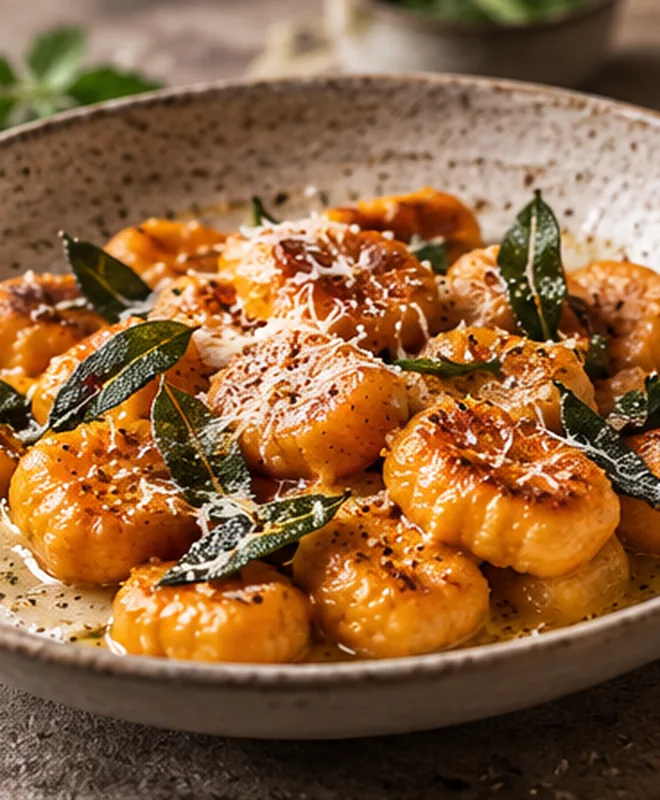

Der Abend, wie er oft läuft
Alles im Kopf.

Süßkartoffel-Gnocchi mit Salbei
Wärmend, frisch und bereit für einen gemeinsamen Abend.
35 Min.
4 Portionen
- Menge umrechnenZutaten für vier Personen im Rezept anpassen. Rezept öffnen
- Einkauf abgleichenFehlende Zutaten zusammensuchen und notieren. Liste wechseln
- Schritte im Blick behaltenZwischen Rezepttext, Helferaufgabe und Timer wechseln. Selbst merken
Eine illustrative Alltagsroutine – kein Screenshot und keine Bewertung der Mealie-Oberfläche.